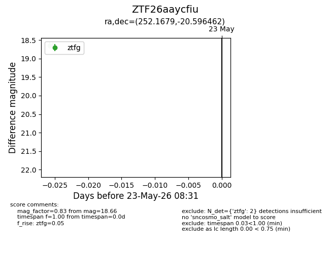
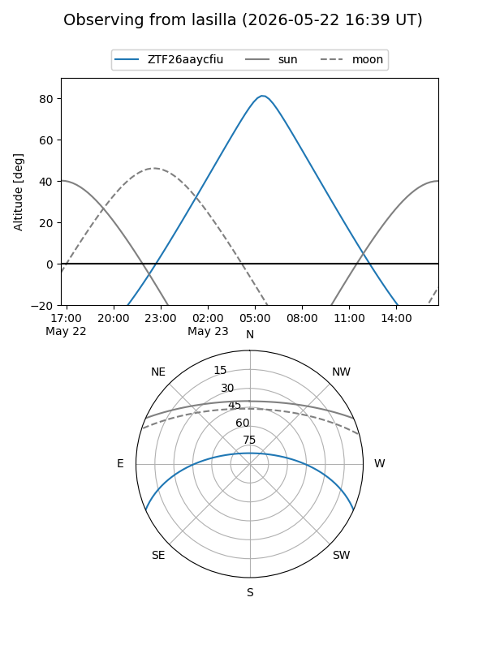
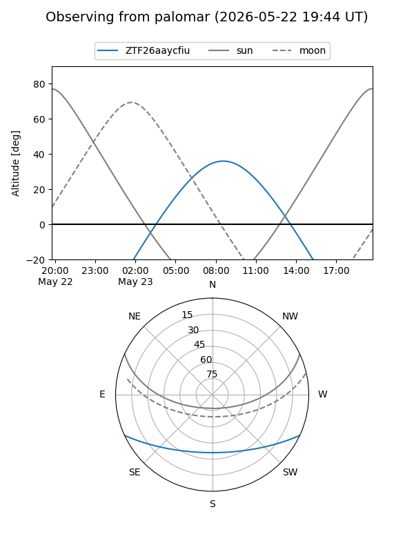
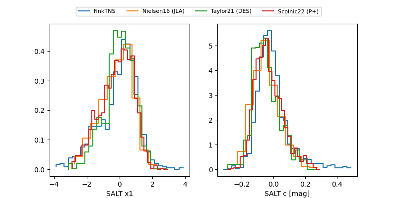

ZTF26aaycfiu
Target ZTF26aaycfiu at 2026-05-23 08:32
Aliases and brokers:
lsst-FINK: link
lsst-Lasair: link
lsst-ALeRCE: link
ztf-FINK: link
ztf-Lasair: link
ztf-ALeRCE: link
alt names
ZTF26aaycfiu (ztf,fink_ztf)
Coordinates:
equatorial (ra, dec) = 252.1679,-20.59646
equatorial (HMS+DMS) = 16:48:40.30,-20:35:47.26
galactic (l, b) = (359.5233,+15.35630)
Flags:
Photometry:
last ztfg=18.66
2 ztfg detections
Lightcurve

Visibility


Additional plots
